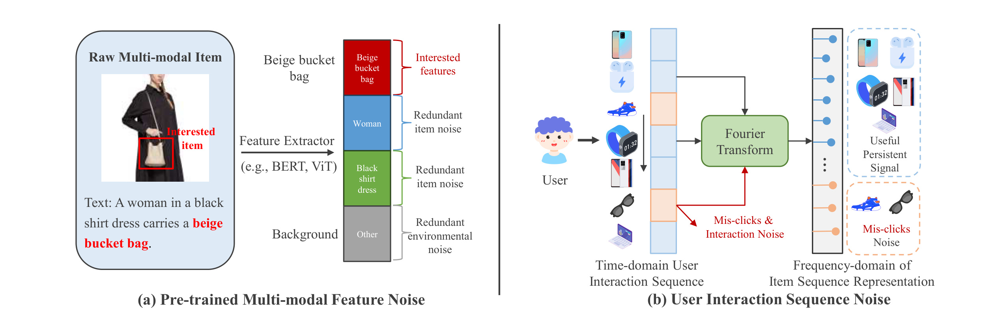
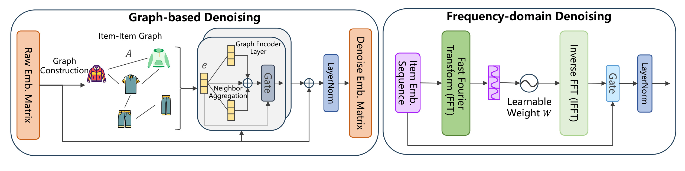
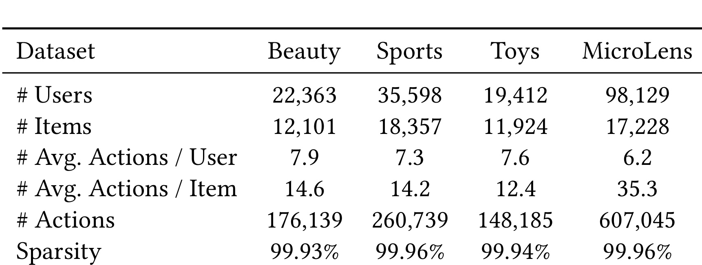
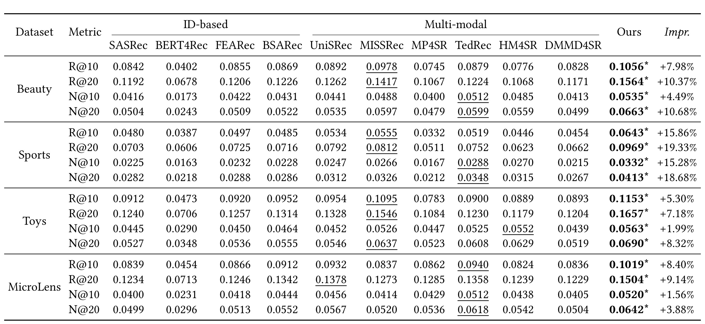
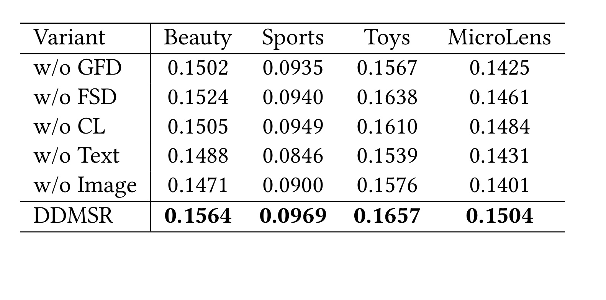
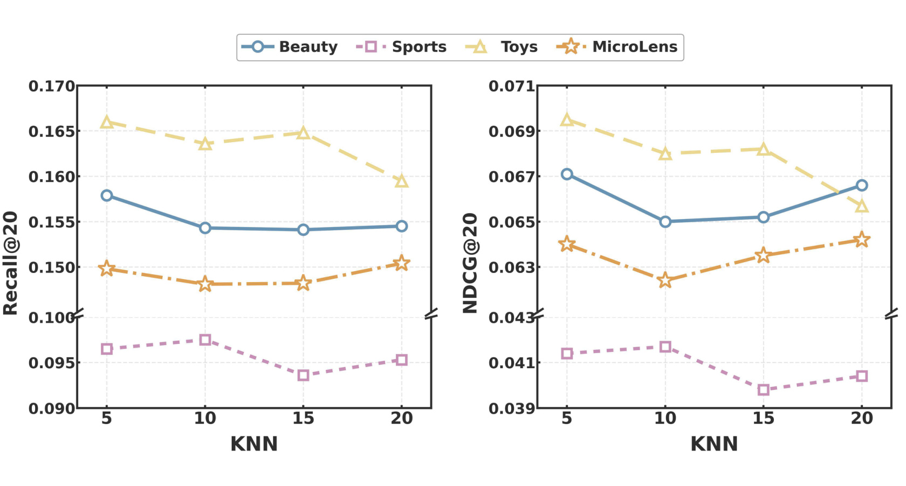
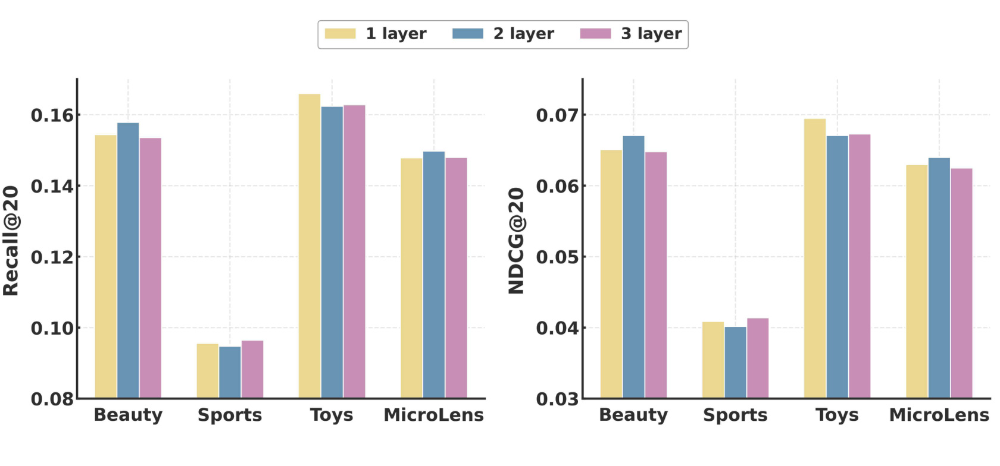
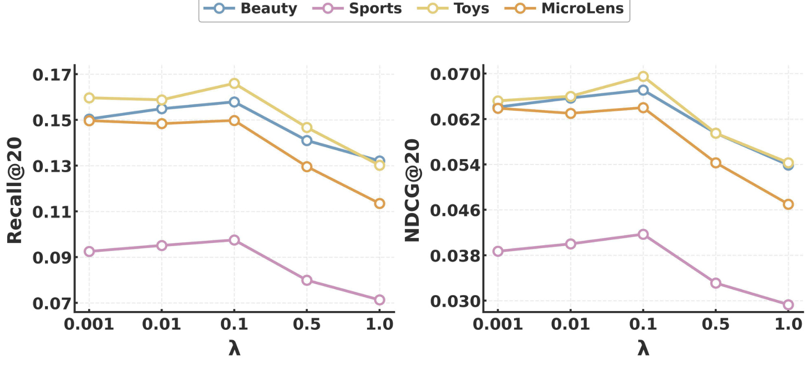
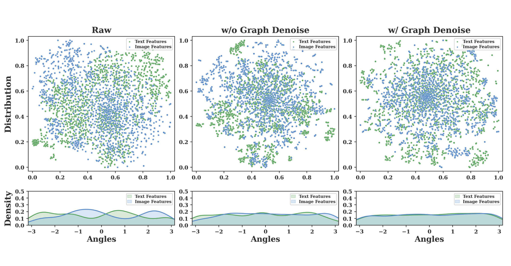
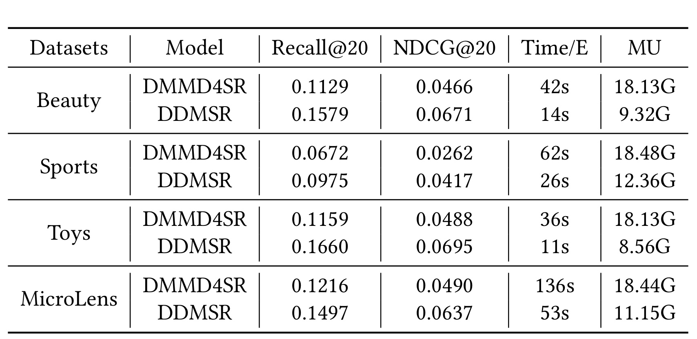

Beyond Noisy Signals: Dual-Level Denoising for Multi-modal Sequential Recommendation
这篇论文研究多模态序列推荐中的“双噪声困境”：物品侧的视觉、文本表示带有与推荐意图无关的语义冗余，用户侧的行为序列又混入误点击、曝光偏差与短暂冲动。作者 Jie Luo、Qi Jin、Xinming Zhang 均来自中国科学技术大学；论文于 2026 年 7 月 21 日公开 arXiv v1，arXiv 备注为已被 ACM MM 2026 接收。本文唯一论文入口是 arXiv:2607.18786，官方代码仓库 jluo00/DDMSR 已核验可访问。DDMSR 的主线不是再加一个更强编码器，而是分别在物品语义图和用户序列频谱上做结构化过滤，再用跨模态对比目标约束文本与视觉的一致性。
通用预训练编码器面向全局语义学习，难以精准对应驱动用户偏好的细粒度属性；同时，真实交互序列中的误点击、曝光偏差和瞬时需求也未必代表稳定兴趣。只净化物品特征或只净化行为序列，都无法解除这两个来源相互叠加的噪声瓶颈。
1. 背景和问题
1.1 从 ID 序列到多模态序列推荐
序列推荐的目标是根据用户按时间排列的历史交互预测下一件物品。SASRec、BERT4Rec 一类方法把物品当成离散 ID，用自注意力抽取长短期依赖；这种做法在交互充分时有效，却难以帮助低频或新物品，因为不同 ID 之间没有可直接迁移的内容语义。多模态序列推荐因此把商品图片、标题、品牌、描述或视频封面引入物品表示，希望在行为稀疏时仍能借助内容相似性刻画兴趣。论文采用冻结的 CLIP-ViT 和 RoBERTa，分别提取视觉与文本特征，避免从有限推荐数据重新训练大型内容编码器。
但“有内容”不等于“内容已经适合推荐”。通用预训练模型优化的是跨域表征能力，往往会保留场景背景、构图、通用主题等强语义；推荐任务真正需要的，却可能是包的轮廓、衣服材质、颜色或品牌等更细粒度属性。把原始预训练向量直接投影后送入序列模型，会把背景和陪衬物体也当成偏好证据。已有多模态方法常将注意力放在融合结构、跨模态路由或预训练迁移上，特征本身的冗余若没有被处理，融合层只是更精细地组合了带噪输入。
另一方面，序列模型通常隐含“每次点击都表达偏好”的理想化假设。真实日志包含误触、偶发浏览、平台曝光诱导与短期冲动；这些交互进入 Transformer 后，会通过注意力传播到用户表示。已有去噪序列推荐主要在行为层面重加权、扩散增强或频域过滤，而特征去噪工作又多集中于静态多模态表示。两条路线各自只处理一层噪声，论文称其为 fragmented perspectives：行为去噪忽略物品内容冗余，特征去噪又忽略时间序列随机性。

Figure 1 把两个问题并列成同一个推荐链路。左侧 (a) 中，用户真正关注的是米色水桶包，但预训练特征还编码了人物、黑色连衣裙和背景；这些成分并非图像识别意义上的错误，却可能是推荐意图意义上的高频偏差。右侧 (b) 中，行为序列大部分围绕电子产品，鞋、眼镜等孤立交互被视为误点击或瞬时噪声，经过傅里叶变换后可在全局频谱上与持续模式区分。图的价值在于说明“噪声”是任务相关概念：某个视觉元素或点击本身都是真实观测，只是它与下一物品预测所需的稳定偏好不一致。DDMSR 因而不能仅做数据删除，而要让模型在结构邻域和频率成分之间学习保留强度。两幅子图还对应后续两个可检验假设：语义邻域应压低局部异常，频谱调制应在保留长期模式时减弱孤立交互；实验需要分别验证，不能只看总指标。
1.2 论文要补的空缺
DDMSR 选择两个互补坐标系。对物品特征，它构建文本图和视觉图，利用相似邻居上的拉普拉斯平滑，把局部不一致成分视为图上的高频噪声；对用户序列，它先把融合后的向量序列映射到频域，用可学习复值滤波器调制各频率，再还原到时域交给 SASRec 类编码器。前者利用“语义相似物品应共享稳定属性”的结构先验，后者利用“稳定偏好会在一段序列上留下可辨识频谱”的信号先验。
这里有两个容易误读的地方。第一，论文虽然以低通直觉解释图平滑，但并未简单把所有高频都删除；每层都有可学习的自特征权重，末端还有残差，从而给细粒度或长尾信号留出通道。第二，序列滤波也不是固定低通。作者明确指出，可学习滤波器既可能压制误点击形成的高频尖峰，也可能削弱短暂兴趣形成的低频漂移；真正决定保留什么的是推荐损失，而不是预先规定某段频率必然有用。
这项工作的推荐系统意义在于把内容侧净化与行为侧净化放进同一端到端目标，并以四个公开数据集检查其互补性。它对大模型与检索增强系统也有启发：冻结视觉/文本编码器提供的是通用语义，不必等同于下游意图；可以先在物品或文档图上做任务相关平滑，再在用户历史、Agent 记忆或检索序列上做频谱调制。不过，论文的证据仍来自离线下一物品预测，不能直接推导为线上误点击识别或真实因果去噪。
2. 方法
DDMSR 的整体顺序是：冻结内容编码器生成原始视觉/文本向量；每个模态独立构建稀疏物品语义图并做图平滑；MoE 适配器把两种模态映射到共同维度；按用户历史索引物品表示并融合位置编码；频域层完成 FFT、复值滤波、IFFT 与门控残差；Transformer 抽取最后有效位置的用户表示；训练时联合下一物品交叉熵和双向跨模态 InfoNCE，推理时对全量物品打分。

Figure 2 展开两个核心去噪器。左侧 Graph-based Denoising 从原始物品嵌入矩阵构造 item-item graph，把中心物品及邻居送入 Graph Encoder Layer；门控在自身表示与 Neighbor Aggregation 之间取舍，再与输入做残差相加并 LayerNorm，输出净化后的物品矩阵。右侧 Frequency-domain Denoising 接收按用户历史查出的 Item Embedding Sequence，依次经过 FFT、可学习复值权重、IFFT，再用门控把还原序列与原序列融合并归一化。两侧图中的箭头说明信号不是被硬删除：图模块保留自特征旁路，频域模块也保留时域旁路。两个去噪器作用在不同轴上：前者沿物品语义邻域改变可供查表的内容表示，后者沿用户时间轴改变送入行为编码器的序列表示，二者最终都由推荐目标与跨模态对比目标共同塑形。
图模块改变可被序列查表的物品表示，频域模块继续改变用户时间轴上的表示，梯度最终都由推荐目标与对比目标共同塑形。
2.1 多模态特征提取与图结构去噪
对模态 \(m\in\{v,t\}\)，冻结编码器先产生物品矩阵 \(F^m\)。DDMSR 计算物品两两余弦相似度，并为每个物品仅保留 top-\(K\) 邻居，从而得到稀疏邻接矩阵。相似度定义为：
符号解释：\(e_a^m,e_b^m\) 是物品 \(a,b\) 在模态 \(m\) 下的原始预训练特征，\(s_{a,b}^m\) 是二者余弦相似度。对每行只留下最大的 \(K\) 个值，作用既是降低全物品两两传播的开销，也是避免密图把不相关物品混在一起。它的边界也很清楚：若预训练空间本身把背景相似误认为推荐相似，top-\(K\) 图会把这种偏差结构化，而不是自动纠正它。 稀疏邻接矩阵随后做对称归一化：
符号解释：\(A^m\) 是模态 \(m\) 的稀疏邻接矩阵，\(D^m\) 是对应度矩阵，\(\widehat{A}^m\) 是归一化传播算子。对称归一化限制高度节点在聚合中的支配程度，使邻居信息按图结构稳定传播。从图信号处理视角看，\(\widehat{A}^m h\) 强化局部相似物品共有的成分，削弱相邻节点之间快速变化的成分，因此可解释为拉普拉斯平滑或结构低通。 每层没有直接用邻居均值覆盖自身，而是学习一个标量门控：
符号解释：\(h^{(l)}\) 是第 \(l\) 层表示，\(h^{(0)}=F^m\)；\(w^{(l)}\in(0,1)\) 由可学习参数 \(\alpha^{(l)}\) 经 Sigmoid 得到，控制保留自身与聚合邻居的比例。层末再把 \(h^{(L_g)}\) 与原始 \(F^m\) 做残差相加并 LayerNorm。这个设计把图平滑强度交给数据学习：高质量头部物品可以多保留自身，内容稀疏的长尾物品可以从邻居补充语义。但 \(w^{(l)}\) 是层级权重而非每个物品独立的可靠性估计，论文的“长尾自适应补全”解释强于它实际展示的门控粒度，仍需代码与分桶实验进一步核验。
2.2 MoE 适配与多模态序列构造
图去噪后的视觉、文本特征维度不同，DDMSR 分别用 MoE Adapter 投影到共同的 \(d\) 维空间。每个专家是含 Dropout 与 ReLU 的两层 MLP，路由器对专家输出加权；训练时在门控 logits 上加入高斯噪声并经 Softplus 调整尺度，沿用 UniSRec 的做法促进专家利用多样性。这里 MoE 的角色不是再次去噪，而是把两种模态转换为更适合推荐与对比对齐的任务空间。输入是 \(\widetilde{F}^v,\widetilde{F}^t\)，输出是 \(E^v,E^t\)；图结构传播已经发生在适配之前，因此适配器接收的是净化后的模态内信号。
对用户序列 \(S_u=[i_1,\ldots,i_n]\)，模型按物品 ID 从 \(E^v,E^t\) 查出两条模态序列。论文允许逐元素加、拼接后线性映射或注意力融合，主实验最终采用逐元素相加，再叠加可学习位置向量 \(P\)，经过 LayerNorm 与 Dropout 得到 \(H\in\mathbb{R}^{n\times d}\)。附录 Figure 6 报告加法在四数据集上整体优于另两种选择；这说明内容已经过图净化和 MoE 对齐后，简单对称融合可能比额外参数更稳健，但该结论仍受当前数据稀疏度与搜索空间限制。 训练时，MoE 路由和序列融合都接受推荐损失与对比损失的梯度；推理时不再计算对比损失，但仍需执行适配、查表和融合。物品侧的图聚合结果可以离线预计算，降低线上路径成本。这里必须区分“冻结内容编码器”和“冻结物品表示”：CLIP、RoBERTa 不更新，但图层、MoE、频域层和序列编码器仍然端到端训练。
2.3 频域序列去噪与 Transformer 编码
频域层的输入是融合后的 \(H\)。沿序列长度维做 FFT：
符号解释：\(H\in\mathbb{R}^{n\times d}\) 是带位置编码的时域物品序列，\(H_f\in\mathbb{C}^{n\times d}\) 是复数频谱；每个隐维在整个历史窗口上被分解为不同频率分量。FFT 让一次变换看到全序列周期，而不是逐位置判断某次点击是否异常；代价是噪声解释变成全局频谱调制，不直接给出可审计的“哪次点击被删除”。 随后用可学习复值权重逐元素调制：
符号解释：\(W\in\mathbb{C}^{n\times d}\) 是频率位置与隐维相关的可学习滤波器，\(\odot\) 表示逐元素乘法，\(\widetilde{H}_f\) 是调制后的频谱。与固定低通不同，\(W\) 可以衰减或放大任意分量；误点击造成的高频尖峰可能被压低，短期兴趣造成的缓慢漂移也可能被调节。因而“高频等于噪声、低频等于兴趣”只是直觉，不是模型的硬约束。 调制频谱再还原到时域：
符号解释：\(\operatorname{IFFT}\) 是逆快速傅里叶变换，\(\widetilde{H}\) 与原序列 \(H\) 具有相同的 \(n\times d\) 形状，可以继续被 Transformer 处理。FFT/IFFT 的复杂度为 \(O(nd\log n)\)，比逐步扩散式净化更直接；但当序列被 padding、截断或具有强非平稳兴趣漂移时，频谱的周期解释会受窗口定义影响。 为了限制过度过滤，模型对原序列与还原序列做位置级门控：
符号解释：\([H\Vert\widetilde{H}]\) 表示拼接，\(\alpha\in(0,1)^{n\times d}\) 是每个位置、每个隐维的门控，\(\overline{H}\) 是平衡频域净化与原信号后的输出。与图层的层级标量门控相比，这里的粒度更细，能让疑似噪声位置多用过滤结果、稳定位置多保留原表示。堆叠 \(L_f\) 层后，\(\overline{H}\) 进入带残差与 LayerNorm 的多头自注意力/FFN，最后有效位置的隐状态作为用户表示 \(s_u\)。训练与推理都执行这一频域链路；实验显示层数并非越多越好。
2.4 多模态对比学习、推荐目标与预测
推荐主任务使用温度缩放的全物品交叉熵：用户表示 \(s_u\) 与真实下一物品向量做点积，并与全部候选竞争。为了缩小文本与视觉空间的异质性，论文把同一物品的 \(e_i^t,e_i^v\) 视为正样本，批内其他物品作为负样本，采用对称 InfoNCE：
符号解释：\(\mathcal{B}\) 是训练批次，\(e_i^t,e_i^v\) 是同一物品的文本和视觉表示，\(\tau_{cl}\) 是对比温度；两个对数项分别以文本检索视觉、以视觉检索文本。目标迫使同物品跨模态接近、不同物品分开，从而给简单加法融合创造更一致的几何空间。风险是“同物品必然语义一致”未必成立，例如图片与标题各自包含互补而非相同信息；权重过大会让对齐压过时间偏好学习。 最终目标为：
符号解释：\(\mathcal{L}_{rec}\) 是下一物品全量交叉熵，\(\mathcal{L}_{cl}\) 是跨模态对比损失，\(\lambda\) 控制辅助对齐对总梯度的贡献。作者主实验固定 \(\lambda=0.1\)，附录敏感性表明从 0.001 增到 0.1 时总体改善，继续增至 0.5 或 1.0 会明显下降。因此 CL 是正则而非主任务替代品。 推理时不再需要批内负样本或计算损失，得分写作：
符号解释：\(s_u\in\mathbb{R}^{1\times d}\) 是序列编码器输出的用户表示，\(E^t,E^v\in\mathbb{R}^{|\mathcal I|\times d}\) 是文本、视觉物品矩阵，\(\widehat{y}_u\in\mathbb{R}^{|\mathcal I|}\) 是全量候选得分。模型按得分排序取 top-\(K\)。这一公式也说明论文的多模态表示没有额外 ID 向量参与最终打分；线上系统若需要混合 ID 协同信号，需自行设计融合与冷启动降级策略。
3. 实验结果
3.1 数据集、基线和评估口径
实验覆盖 Amazon 的 Beauty、Sports and Outdoors、Toys and Games 三个电商品类，以及短视频平台数据集 MicroLens-100k。Amazon 文本由标题、品牌、类别和描述拼接，图片作为视觉模态；MicroLens 使用视频封面、标题与标签。用户和物品少于五次交互的记录被过滤，按 leave-one-out 划分训练、验证、测试。视觉特征来自 CLIP ViT-B/32，文本特征来自 RoBERTa。

Table 1 显示四个数据集都高度稀疏：Beauty、Sports、Toys、MicroLens 的稀疏度分别为 99.93%、99.96%、99.94%、99.96%。前三个 Amazon 子集有 1.19 万至 1.84 万物品、1.94 万至 3.56 万用户，平均每用户仅 7.3-7.9 次行为；MicroLens 有 98,129 个用户、17,228 个物品和 607,045 次行为，平均每用户 6.2 次，但每物品平均 35.3 次。这样的设置适合检验内容侧迁移和长尾补全，却也意味着离线提升可能受到极短序列与五交互过滤规则影响。表中四列是四个独立基准，不应把 Amazon 三类视为一个合并数据集。
指标为 Recall@10/20 与 NDCG@10/20，并在全物品集合做 full-ranking，避免负采样评估偏差。基线分两类：ID-based 包括 SASRec、BERT4Rec、FEARec、BSARec；多模态包括 UniSRec、MISSRec、MP4SR、TedRec、HM4SR、DMMD4SR。UniSRec、MISSRec、MP4SR 不使用额外预训练数据，所有模型在 RecBole 框架中调参。DDMSR 用 Adam、学习率 0.001，图层数固定 \(L_g=2\)，top-\(K\) 从 5/10/15/20 搜索，频域层数从 1/2/3 搜索，五个随机种子取均值，硬件为单张 RTX 4090 24GB。
3.2 主结果：四个数据集的一致领先

Table 2 的 16 个“数据集 × 指标”单元中，DDMSR 全部取得最高值；星号表示作者报告相对最佳基线的配对 \(t\) 检验达到 \(p<0.01\)。提升并非均匀：Sports 的 Recall@20 从最佳基线 MISSRec 的 0.0812 提到 0.0969，相对提升 19.33%，是表中最大值；Beauty 的 NDCG@20 从 TedRec 的 0.0599 提到 0.0663，提升 10.68%；Toys 的 NDCG@10 只从 HM4SR 的 0.0552 提到 0.0563，提升 1.99%；MicroLens 的 NDCG@10 从 TedRec 的 0.0512 提到 0.0520，提升 1.56%。因此更准确的结论是“跨指标方向一致，但收益幅度依数据集和指标变化”，而不是每种场景都获得两位数提升。
频域基线 FEARec、BSARec 相对经典 ID 模型经常更强，说明序列频谱确有可用信号；多模态模型整体又常优于 ID 模型，说明内容缓解稀疏问题。DDMSR 同时引入图特征净化和序列频谱调制，主表只能证明组合模型更优，不能单独归因每个模块。作者对 DMMD4SR 的解释是扩散式多级去噪难优化且目标与推荐不完全对齐；但主表中的 DMMD4SR 复现效果明显偏低，公平性仍依赖其调参空间、实现版本和预训练条件。论文给出五随机种子和显著性阈值，却未在主表展示方差、置信区间或效应量，显著性证据还不够完整。
3.3 消融：图平滑、频域过滤与对比目标分别做了什么

Table 3 以 Recall@20 比较五个变体。去掉 GFD 后，Beauty、Sports、Toys、MicroLens 分别从 0.1564、0.0969、0.1657、0.1504 降至 0.1502、0.0935、0.1567、0.1425，四个数据集都下降，Toys 和 MicroLens 的绝对降幅更明显，支持图邻域传播在稀疏内容表示上有效。去掉 FSD 后相应为 0.1524、0.0940、0.1638、0.1461，同样全线下降，但 Toys 的降幅仅 0.0019；这说明 FFT 过滤具有增益，却不能说它在每个数据集都是主导模块。去掉 CL 后为 0.1505、0.0949、0.1610、0.1484，Beauty 与 Toys 更依赖跨模态对齐，Sports 与 MicroLens 的影响较小。
去掉文本或图像的下降普遍大于去掉单个去噪模块：例如 Sports 去文本从 0.0969 降至 0.0846，MicroLens 去图像从 0.1504 降至 0.1401。这支持两模态互补，而非某个模态可以被完全替代。但该消融只报告 Recall@20，没有给出 NDCG、运行成本或噪声强度分组；模块之间也没有二阶组合消融，例如同时去掉 GFD 与 CL，因而难以判断图平滑与对比对齐是简单相加还是互相依赖。更强的因果验证应人为注入可控误点击或特征扰动，观察两个模块是否分别对对应噪声类型更敏感。
3.4 超参数敏感性与过滤边界

Figure 3 比较 \(K=5,10,15,20\)。Beauty 和 Toys 在 \(K=5\) 最好，Sports 在 \(K=10\) 最好，MicroLens 在 \(K=20\) 更优；曲线整体波动不大，但不存在统一最优邻域。结合 Table 1，可把结果理解为图连接的偏差—方差权衡：小而稀疏的品类需要更窄邻域避免引入语义近似但意图不同的物品，物品较多或每物品交互更密集的集合可能利用更广邻域。图中只给四个离散点，尚不能证明最优 \(K\) 由规模或密度单调决定；工程上应把邻居纯度、类目边界与构图成本纳入验证，而不是把 5 或 20 固化为通用值。两项指标的曲线形状也不总是同步，说明构图超参数会同时影响候选覆盖和前列排序质量；上线前应按核心业务指标分别调参。

Figure 4 显示 Beauty、MicroLens 在两层时最佳，Toys 一层最佳，Sports 三层最佳。多数数据集从一层增到两层有收益，但继续加深时可能停滞或下降，正好暴露频域过滤的边界：重复调制会累积去噪，也可能损伤短期兴趣和非平稳变化。Sports 从更深过滤获益，与其主表提升较大相呼应，但论文没有直接测量 Sports 的误点击比例，不能把相关性写成“Sports 噪声更多”的已证事实。部署时应同时监控短会话、兴趣突变用户和新事件流量，避免离线平均最优层数掩盖局部过度平滑。图中的柱高差距整体不大，尤其 Toys 的不同层数非常接近，因此不能把一层胜出解释成强普适规律；应结合多随机种子方差和分桶结果决定是否值得增加层数。

Figure 7 给出 \(\lambda\in\{0.001,0.01,0.1,0.5,1.0\}\) 的结果。四个数据集在 0.1 左右同时达到峰值，增至 0.5 后明显下降，1.0 更差；Sports 的 Recall@20 下降尤为直观。这为“CL 是辅助约束”提供了比单点消融更细的证据：小权重不足以弥合模态差异，适中权重改善表示一致性，过大权重则让同物品文本/视觉靠近这一目标主导梯度，牺牲下一物品预测。图中峰值一致也可能受到统一搜索网格较粗的影响；若不同数据集独立细搜 0.05-0.2，未必仍共享同一最佳值。曲线也说明对比学习并非越强越好：它服务于推荐目标，而不是替代推荐目标；复现时应记录两个损失的梯度范数和验证集指标，定位负迁移从何处开始。
3.5 图平滑后的跨模态分布

Figure 5 从左到右比较 Raw、w/o Graph Denoise、w/ Graph Denoise。上排把文本绿色点和视觉蓝色点投影到单位圆上的二维分布，下排画角度 KDE。原始特征的两模态密度峰错位且存在尖锐起伏；只保留对比学习而不做图去噪时，分布已有部分混合，但局部簇和不规则波动仍明显；加入图去噪后，两色点在中心区域更充分交叠，角度密度也更平滑。该图与 GFD/CL 消融方向一致，说明图平滑先减少模态内局部异常，再由对比目标做模态间对齐。
不过，二维投影与角度密度不能证明高维表示真的“无噪声”。投影算法、归一化方式和抽样物品都可能改变外观；更均匀、更各向同性也不天然等于更适合个性化，过度均匀可能抹去稀有属性。论文只展示 Beauty，没有提供其他三个数据集或按头尾物品拆分的同类图。更严谨的复现应补充高维邻域保持率、跨模态检索准确率、表示有效秩，并关联到每个物品的排序增益。
3.6 效率、实现与可复现边界

Table 4 在同一 RTX 4090 环境下比较 DDMSR 和 DMMD4SR。每轮训练时间从 Beauty 的 42 秒降到 14 秒、Sports 从 62 秒降到 26 秒、Toys 从 36 秒降到 11 秒、MicroLens 从 136 秒降到 53 秒，约为 2.4-3.3 倍加速；显存从约 18.1-18.5GB 降到 8.56-12.36GB，减少约三分之一到一半。作者将差异归因于扩散基线需要多网络、多步逆向过程，而 DDMSR 的序列频域层是一次 FFT/IFFT，物品图聚合还能离线预计算。表同时报告 Recall@20/NDCG@20，说明效率改善没有以相对该基线的效果退化为代价。
需要注意，Table 4 的 DDMSR 数值与主表 Table 2 略有差异，例如 Beauty Recall@20 为 0.1579 而主表为 0.1564，MicroLens 为 0.1497 而主表为 0.1504；论文没有在表注中解释是不同复跑、效率配置还是随机波动。因此，效率倍数可以按作者当前硬件结果理解，但效果列不应与主表混算。理论上图聚合复杂度含 \(O(NKd)\)，频域与门控约为 \(O(FBLd(\log L+d))\)；作者称图结果可离线缓存，使在线额外图成本近似移出关键路径。实际部署仍要考虑物品新增后的图更新、缓存一致性、频域层对固定最大长度的依赖，以及全量候选点积的召回成本。
4. 总结
4.1 我的判断
DDMSR 最有价值的地方，是把“通用多模态表示不等于推荐表示”和“观测行为不等于稳定偏好”放进同一模型，并给出两个计算上相对克制的处理器。图拉普拉斯平滑利用物品间局部结构净化特征，FFT 层利用序列全局频谱净化行为，InfoNCE 再把文本与视觉拉到共同空间。四数据集主结果、单模块消融和效率表形成了基本闭环：组合模型稳定领先，GFD/FSD/CL 各自移除都会下降，相比扩散式多级去噪也更省时间与显存。
但论文仍更像“有效的端到端结构”，而不是已验证的噪声识别理论。图高频、序列高频和真实推荐噪声之间只有直觉映射，没有已知噪声标签；可学习滤波器的自由度意味着它可能学到一般频域变换，而非可解释去噪。现有证据足以支持 DDMSR 是一个值得复现的多模态序列推荐架构，不足以支持它已准确识别误点击或完全净化预训练特征。
4.2 工程启发与复现建议
对推荐系统，较现实的落地方式是把物品图构建和 GFD 输出放在离线特征流水线，按内容更新频率增量刷新；在线序列服务只加载净化后的双模态向量，执行少量 FFT/IFFT、门控和行为编码。应把原始向量、图净化向量与最终向量都保留版本，方便回滚和排查某类商品是否被邻居污染。对于 RAG、个性化 Agent 或长期记忆，可把文档/记忆单元构成语义图，先做任务相关平滑，再对按时间排列的检索或行为轨迹做频域调制；但必须用下游任务损失决定滤波，不宜把高频一概删除。
复现时优先核对三件事：一是 top-\(K\) 图是否分别按文本和视觉构建、是否对称化及何时更新；二是复值 \(W\) 的参数化、共轭对称与 padding mask 如何处理，确保 IFFT 输出稳定为实数；三是 CL 的批内负样本、温度和 \(\lambda\) 是否与推荐批次完全一致。官方仓库已经可访问，但论文 PDF 仍保留 ACM 模板中的占位会议字段和 DOI，引用时应以 arXiv 页面及其接收备注为准。
4.3 局限与后续跟进
局限至少有四点：
- 噪声缺少直接标注。 实验只观察排序指标，没有人工或合成标注证明被抑制的频率成分确实对应误点击，因果解释有限。
- 图平滑可能伤害稀有偏好。 top-\(K\) 来自通用预训练空间，语义相似不必然等于推荐意图相似；层级门控也未做到逐物品可靠性控制。
- 非平稳序列边界未展开。 兴趣突变、节日事件、极短会话和 padding 会改变频谱，Figure 4 已显示更深过滤可能过平滑。
- 评测外推有限。 四个公开数据集均为离线 implicit feedback，没有线上 A/B、延迟尾分位、曝光偏差校正或真实冷启动流程。
- 统计与复现信息仍不完整。 主表缺少方差和效应量，效率表与主表有小幅数值差异，Figure 5 又只展示 Beauty。
后续最值得做的三组实验是：第一，向行为序列注入已知比例和位置的随机点击，同时向图像/文本向量注入可控背景扰动，分别画出 GFD 与 FSD 的恢复曲线，验证“双层”是否具有噪声类型专一性；第二，按物品流行度、序列长度和兴趣漂移速度分桶，比较固定低通、可学习滤波与无滤波，确认收益来自频谱选择而非额外参数；第三，在相同编码器、相同搜索预算和相同硬件上重跑 DMMD4SR，补充吞吐、P95 延迟、图更新成本、方差与置信区间。若这三类证据成立，DDMSR 才能从一个离线表现强的架构，进一步成为可解释、可维护的推荐去噪组件。